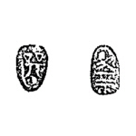
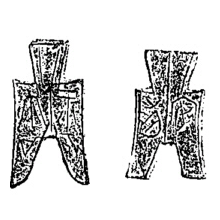
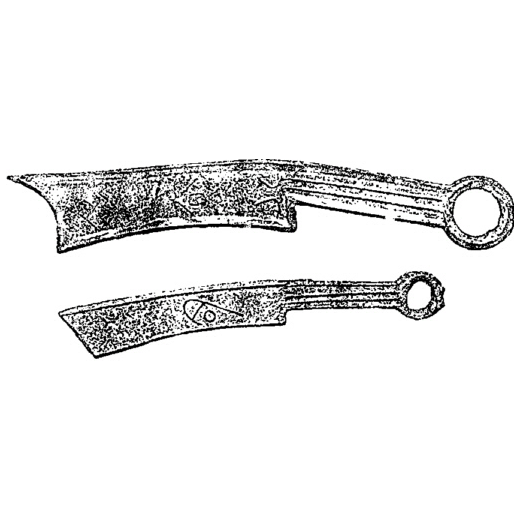
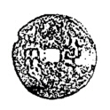
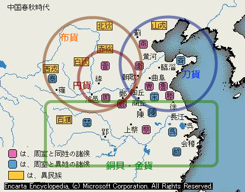

『貨幣の中国古代史』
公開日：
")
- 作者: 山田勝芳
- 出版社/メーカー: 朝日新聞社
- 発売日: 2000/09
- メディア: 単行本
- クリック: 1回
- この商品を含むブログを見る
2000年刊行、中古で購入。
互酬が共同体を超えて行われるとき（域外取引）、マルクスでいうところの「一般的等価物」としての位置を最初に占めるようになったのは、子安貝・亀甲（・銅の地金・奴隷・碧玉などの宝物）であったらしい。これらは域外取引のみならず、“あの世”との取引にさえ使われた。ここから、貨幣は厭勝銭としての用途も帯びるようになった（これはもしかすると、順序としては逆だったかもしれない。また、相互補完的・共進化的だったかもしれない）。
また、春秋時代には技術の発展に伴い、農耕具や刀剣などのが互酬に用いられることが増えた（これらも域外通用・宗教的通用の余地のあるものだが、聖的・呪術的というよりは実用的・世俗的側面がより強い）。それらを反映して、春秋・戦国時代にはいくつかの貨幣タイプが同時に流通していたらしい。さらに三晋では、のちの時代の基本的な貨幣形態である円銭が出現する。
| - | 形式 | 原型 | 流通地域 |
| 銅貝 |  | 子安貝を模す | 楚（金貨・銀貨も流通） |
| 布銭 |  | 農耕具（鏟・鎛）を模す | 秦～三晋（魏）～燕・宋 |
| 刀銭 |  | 円環小刀を模す | 斉～三晋～燕 |
| 円銭 |  | 円孔→方孔 | 三晋（魏） |
流通地域をデフォルメすると、こんな感じ。楚はちょっと異世界として、魏・斉が経済の中心やったんかなぁ。

やがて六国を征服した秦は、隣国の経済大国である魏・楚の貨幣（円銭、金貨）をベースに貨幣制度を統一し、“半両銭”を流通させたが、不十分に終わった。
秦を承けた漢は、民間鋳造を認めることで“半両銭”を普及させたが、当時は戦乱による荒廃と経済の縮小から小銭需要が強く、過度な軽量化を図った“楡莢銭”が乱鋳された。そのため、再び私鋳が禁止され、呉・蜀などの郡国による“五銖銭”の鋳造が行われた。これを機に、“半両銭”から“五銖銭”への切り替えが進んだ。
武帝期には、銅産出の増加、製鉄技術の進歩による武器の銅→鉄転換などから、貨幣の原材料となる銅の流通がピークに達する。一方、金の流通量は減少しており（どうやらシルクロード交易で絹とともに流出したらしい）、金銭二元体制から銭一元体制へと移行する。
そして、新の王莽の復古時代を経て（王莽はいろいろやらかしたのでこのあたりの話も面白い）、後漢以降は極度の銭不足と悪銭流通の時代が訪れる（また、政治的にもながい混乱と停滞の時代を迎える）。
銭の流通を補ったのは、布帛や穀物だ。
官僚の俸禄は、前漢では銭建てだったのにたいし、後漢では銭・穀建てになった。また、皇帝が臣下に与える賜物は、後漢では布帛が、晋では穀・帛が主となった。罰金として徴収する財物は、秦の場合、甲冑と盾であったが、前漢は金、後漢は帛、晋は金・帛と変遷していった。北魏や梁など金を課せられた王朝でも、実際は帛で納められたし、銅を用いた唐も、初期は帛を不正財物を計る単位としていた。
挙句には、上代では布帛の流通が主であったという故事（実はそんなことはない）から、銭流通を停止しようとする意見まで出されることがあったが、すでに中国社会には“貨幣”概念がいきわたっており、布帛さえも実質は貨幣に換算されて交易・贈与されたから、日本のように物々交換の世界へ戻ることはなかった。
こうした悪銭流通の時代は、隋・唐で終止符が打たれ、“開元通宝”の流通をもって旧態に復した（銅の産出不足の話はどうなったんやろう、政治・経済の安定で自然と解決されたんだろうか）。また銭が足りなくなって“紙幣”誕生につながるのは、宋や元の時代に下ってからの話になる。
――と、まぁ、こんな感じ（まとめが間違ってたら僕のせいです）だけど、董卓の“董卓小銭”の話や、蜀・呉の貨幣流通なんかのトピックなんかも面白かったかも。